Ogíjares 89
Jugador de campo
Proyecto deportivo personal
Ogíjares 89 · Alevín · Jugador polivalente
Nueva categoría y más aprendizaje. Alejo continuó evolucionando como jugador, aplicando en el campo todo lo aprendido en entrenamientos y videos y así siguió sumando recursos técnicos y competitivos para hacerse importante dentro del grupo.
Las fotografías de esta temporada se muestran en miniaturas uniformes. Al pulsar sobre una foto se abre en grande con controles para volver, avanzar y retroceder.
Desde esta página puedes ir directamente a cualquier otra galería sin volver al índice principal.
Jugador de campo
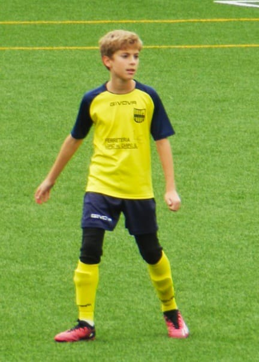
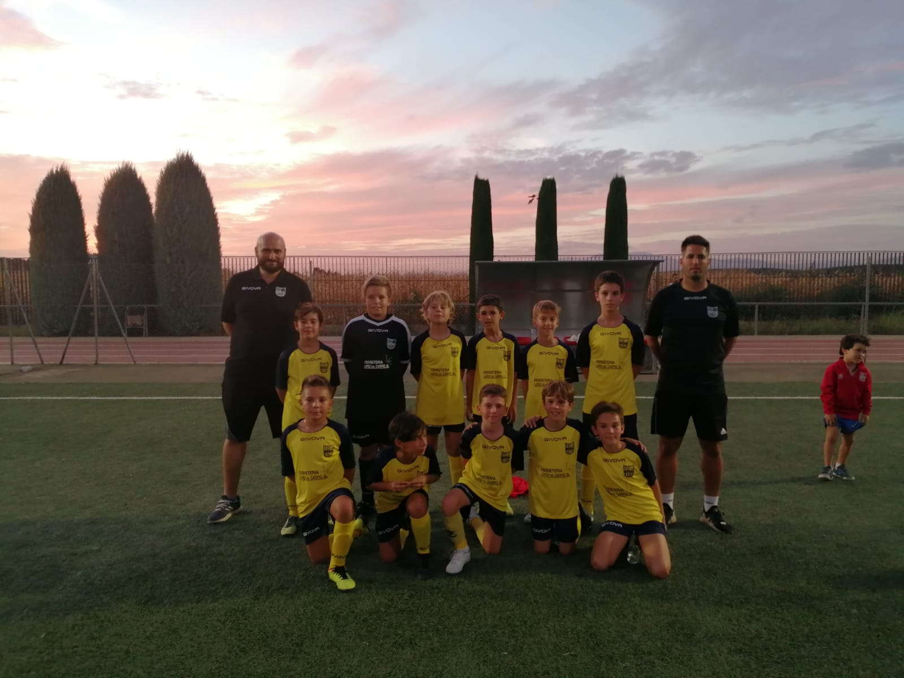
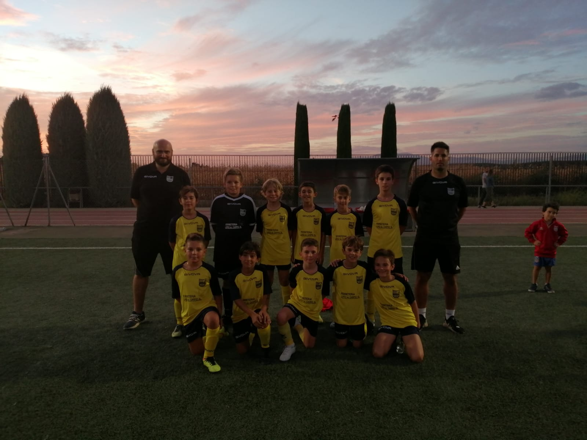
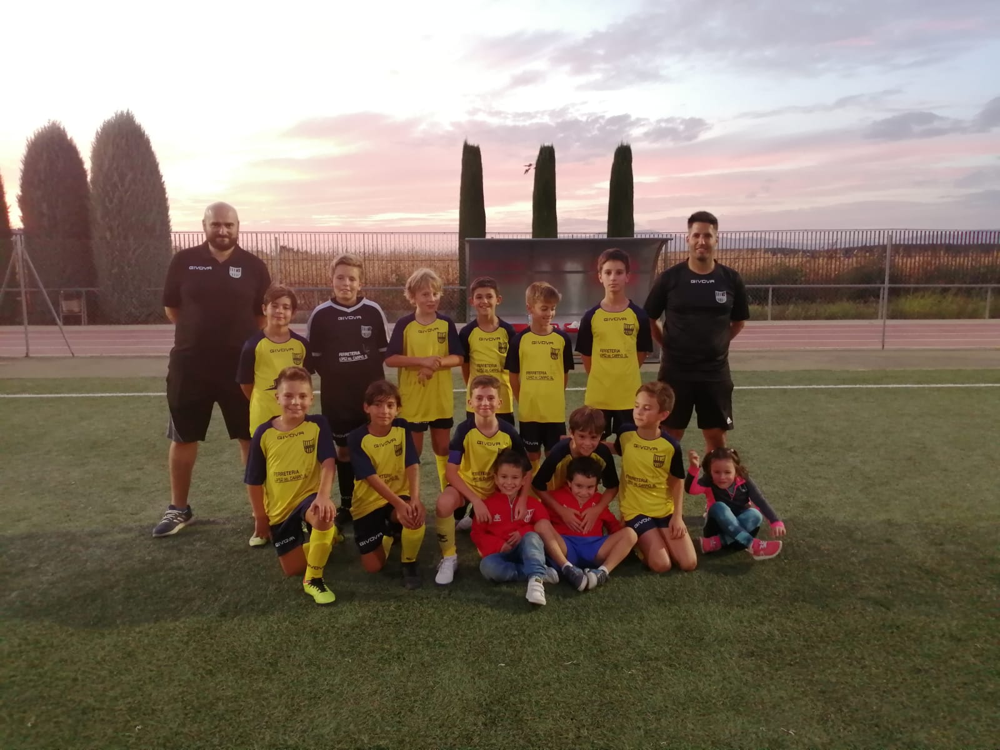
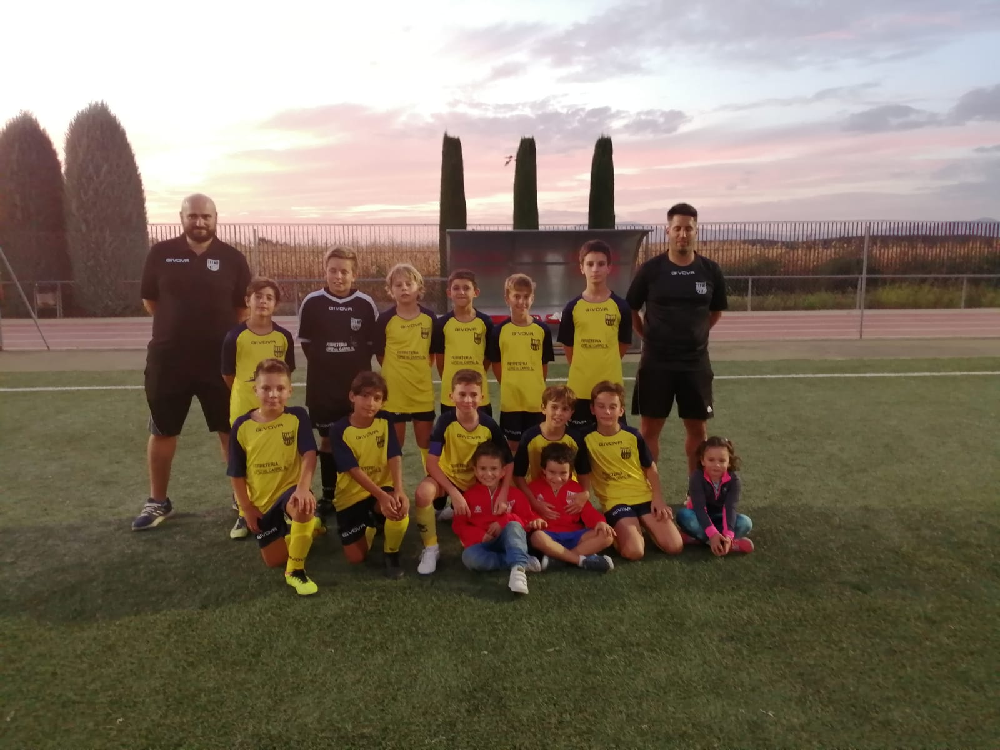
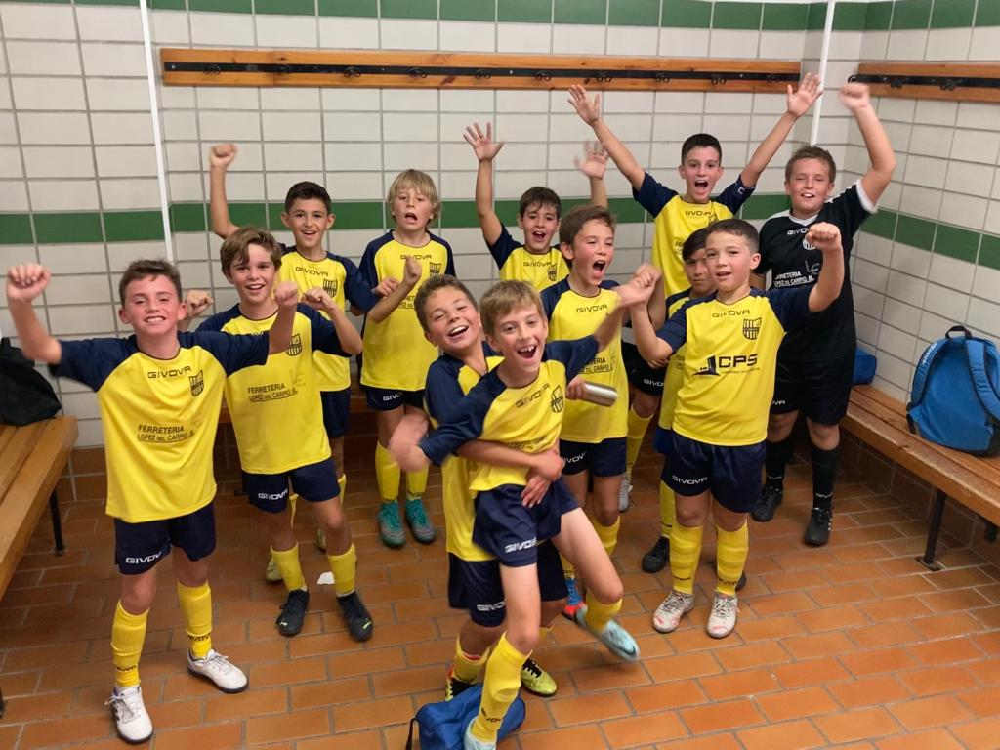
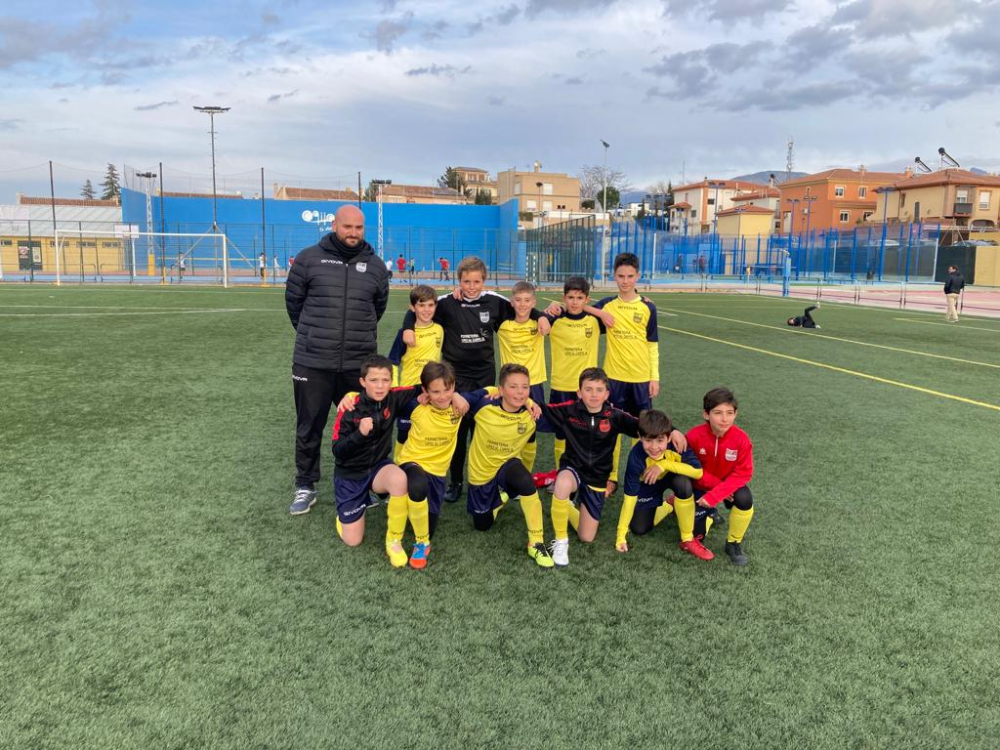
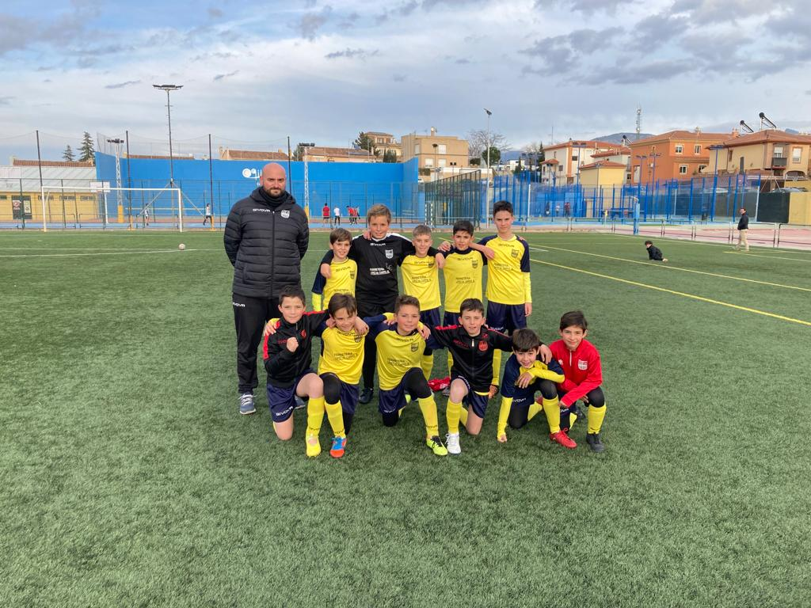
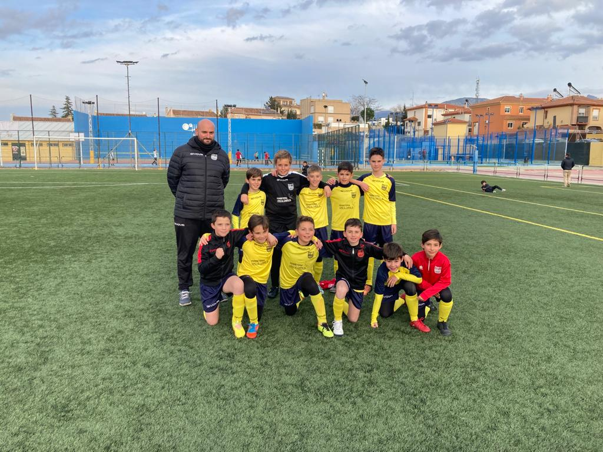
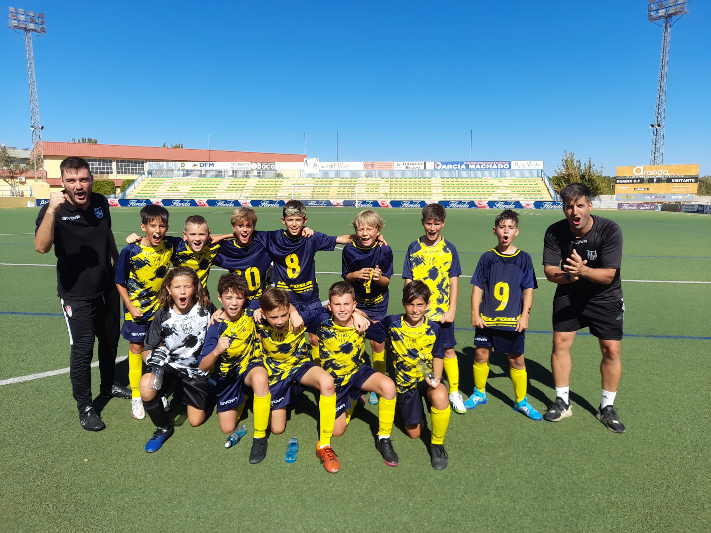
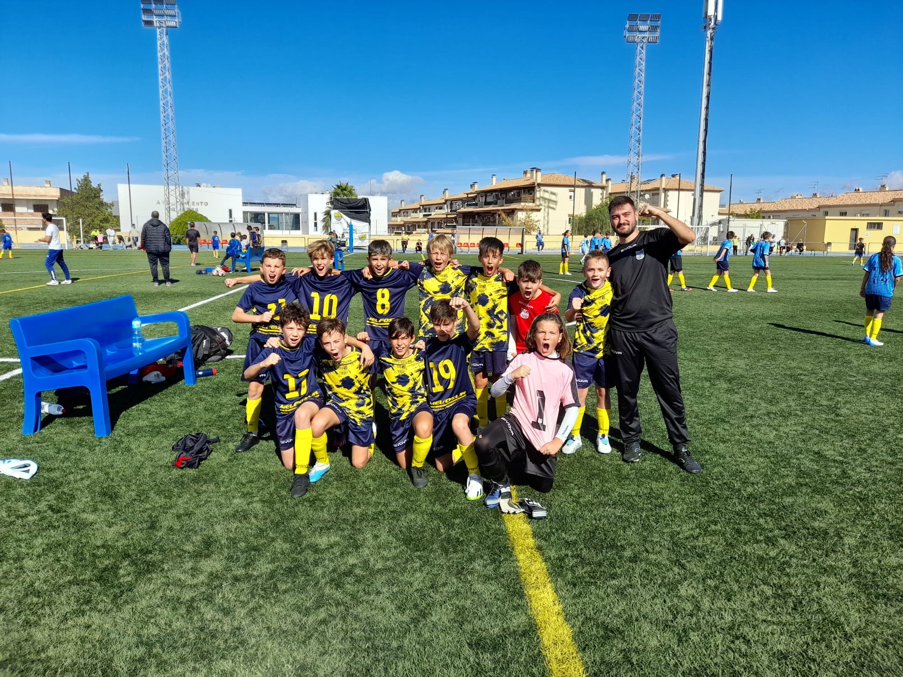